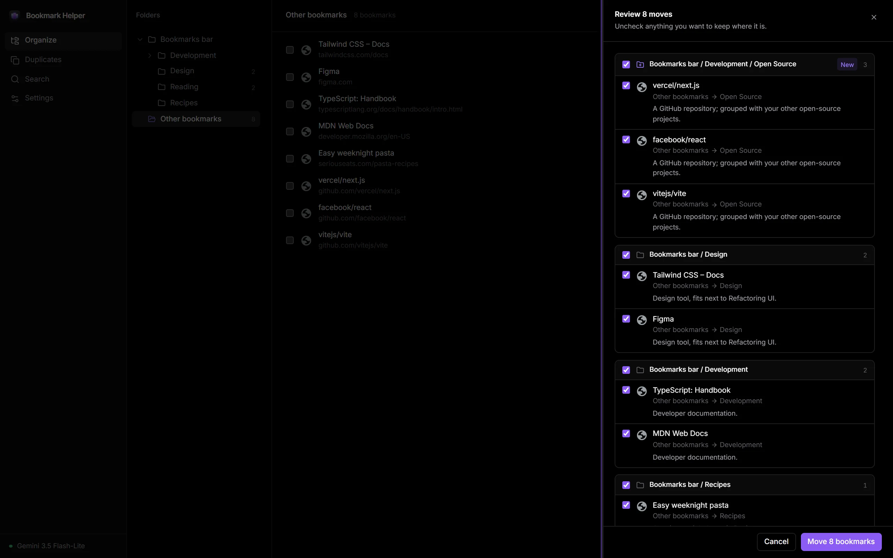
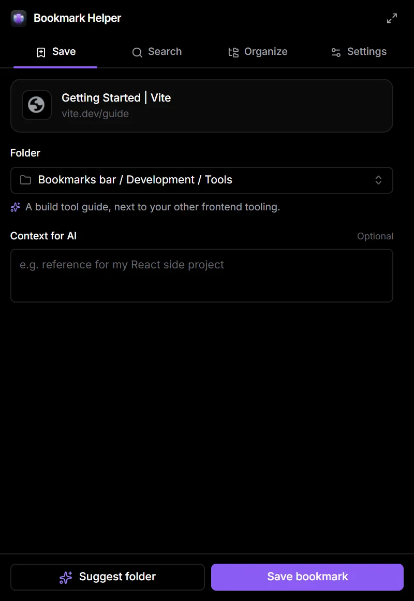

AI bookmark manager
Bookmarks that file themselves.
Gemini suggests the right folder, finds bookmarks by meaning and cleans up duplicates. You approve every change.
Powered by Gemini
Free & open source
Undo everything



